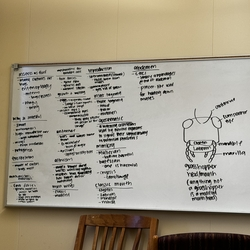
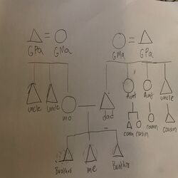
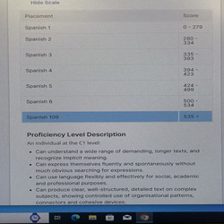
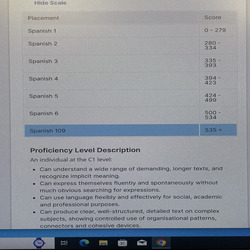
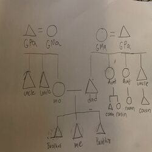
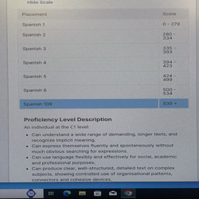

Roberto Morales
I am a dedicated third-year education major at the University of California, Riverside (UCR), where I am passionately pursuing a career in teaching. I have a strong belief in the transformative power of education and am committed to fostering an inclusive and supportive learning environment for all students.
Born and raised in Los Angeles, California, I developed an early interest in education, inspired by the teachers I had growing up. This passion led me to choose education as my major, and I have immersed myself in coursework that encompasses educational psychology, curriculum development, and teaching methodologies.
At UCR, I have excelled academically, consistently earning recognition on the Dean’s List. I actively participate in various extracurricular activities, including the Education Club, where I have taken on leadership roles. Through these experiences, I have honed my skills in collaboration, communication, and project management, all of which are essential for a successful teaching career.
In addition to my studies, I am gaining practical experience through internships and volunteer opportunities in local schools. Working with diverse student populations has provided me with invaluable insights into the challenges and rewards of teaching. I have also been involved in tutoring programs, where I have had the opportunity to mentor younger students, helping them build confidence and academic skills.
I am particularly interested in bilingual education, believing that every child deserves access to quality education tailored to their unique needs. I am currently exploring research opportunities with faculty members at UCR, focusing on bilingual education in elementary school, which will further deepen my understanding of effective teaching practices.
Outside of academia, I enjoy sports and team activities. These pursuits not only provide me with a well-rounded perspective but also enhance my ability to connect with students on a personal level. I believe that building relationships is crucial in education, and I strive to create a classroom environment where students feel safe, respected, and motivated to learn.
Looking ahead, I am excited to complete my degree and pursue a teaching credential. I am particularly interested in teaching in elementary school. I envision a future where I can make a lasting impact on my students' lives and inspire the next generation of learners.
In summary, I am an ambitious and passionate education major at UC Riverside, eager to bring my skills and enthusiasm to the field of education. With a strong academic background, practical experience, and a commitment to equity and inclusion, I am well-prepared to embark on a rewarding career in teaching, dedicated to making a difference in the lives of my students.
Experience
Student
• Varsity Football team in Highschool
• Starting Quarter Back for all of Highschool
• School Rapper
Teaching Assistant
• Tutored children ages 5-12
• Reviewed and graded student homework
Education
UC Riverside
Portfolio


 


